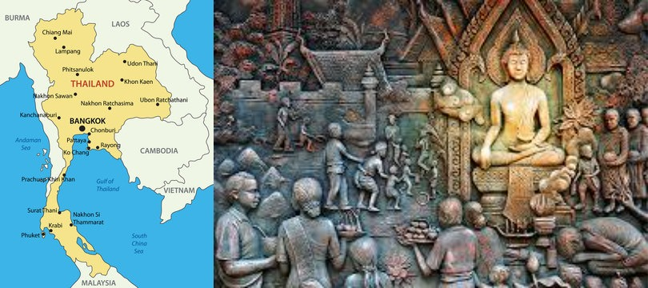
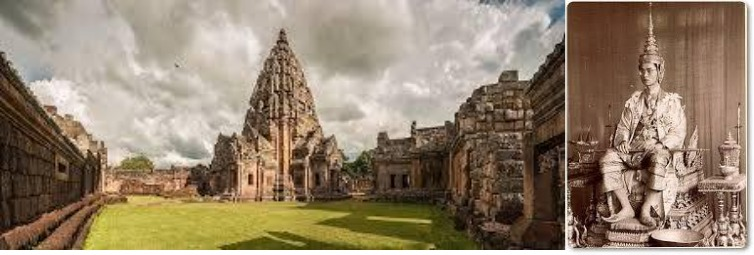
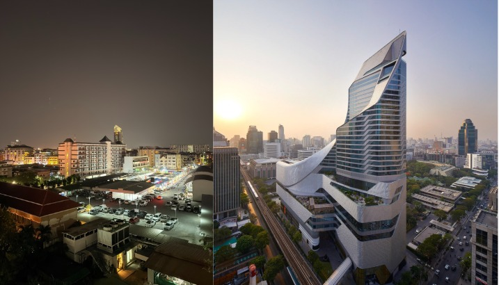

Thailand, the Land of Smiles, boasts a long and vibrant history shaped by powerful kingdoms, cultural exchanges, and resilience. From its ancient civilizations to its modern-day monarchy, Thailand’s past is filled with rich traditions and dynamic changes. Let’s dive into the fascinating history of Thailand.
Ancient Thailand: Early Settlements and Civilizations
Archaeological evidence suggests that Thailand has been inhabited for thousands of years. Prehistoric communities lived in the region as early as 4,000 BCE, engaging in agriculture and metalworking. The Bronze Age and Iron Age saw the emergence of more sophisticated societies that laid the groundwork for later civilizations. The earliest known civilization in Thailand was the Dvaravati culture (6th to 11th century CE), heavily influenced by Indian culture, particularly Buddhism and Hinduism. This era saw the establishment of small city-states that thrived in trade and religious development.

The Rise of the Thai Kingdoms
Discussing the future, the report puts forth five illustrative scenarios or possibilities we can presume heading towards us.
-
Before the emergence of Thai kingdoms, much of present-day Thailand was under the
rule of the Khmer Empire (9th to 13th century), centered in Angkor (modern-day Cambodia).
Khmer influence can still be seen in Thailand’s architecture, language, and religious practices.
-
Sukhothai Kingdom (1238–1438): Often regarded as the first independent Thai kingdom,
Sukhothai was founded in 1238 by King Si Inthrathit. This period is seen as
Thailand’s golden age, as it marked thebirth of Thai culture, script, and the spread of
Theravāda Buddhism. King Ramkhamhaeng, the most famous ruler of Sukhothai,
played a crucial role in shaping Thai identity.
-
Ayutthaya Kingdom (1350–1767): Following the decline of Sukhothai, the Ayutthaya Kingdom
emerged as a dominant power in 1350. Situated along major trade routes, Ayutthaya became
one of the wealthiest and most powerful cities in Asia. It maintained strong diplomatic
and trade relations with China, Japan, India, and even Europe. However, in 1767, the Burmese
army sacked Ayutthaya, bringing the kingdom to a dramatic end.
-
Thonburi Kingdom (1767–1782): After Ayutthaya’s fall, General Taksin reestablished
Thai rule in Thonburi, near modern-day Bangkok. His reign was short-lived but
crucial in reuniting the kingdom.However, due to internal conflicts, King Taksin
was overthrown in 1782.
-
The Rattanakosin Kingdom (1782–Present): The Chakri Dynasty, founded by King Rama
I, established the capital in Bangkok and ushered in the Rattanakosin era.
The monarchy continued to consolidate power, modernize the nation, and resist
colonial rule while maintaining diplomatic relations with European powers.
Thailand remained the only Southeast Asian country never colonized by European
nations.
-
Today, Thailand is a thriving nation known for its cultural heritage, strong
monarchy, and dynamic economy. While political challenges remain, Thailand
continues to be a vital player in Southeast Asia.

(In the graph, SSP1-1.9, SSP1-2.6, SSP2-4.5, SSP3-7.0, and SSP5-8.5 denote the first, second, third, fourth, and fifth scenarios, respectively)
Modern Thailand: Monarchy, Democracy, and Challenges:
The 20th century brought significant changes to Thailand. In 1932, a bloodless revolution led to the end of absolute monarchy, transitioning Thailand into a constitutional monarchy.Throughout the 20th and 21st centuries, Thailand has experienced political instability, military coups, and rapid economic growth.
Today, Thailand is a thriving nation known for its cultural heritage, strong monarchy, and dynamic economy. While political challenges remain, Thailand continues to be a vital player in Southeast Asia.

Conclusion
The history of Thailand is a story of resilience, adaptability, and cultural richness. From ancient civilizations to modern progress, Thailand has preserved its traditions while embracing change. Whether through its magnificent temples, vibrant festivals, or historical landmarks, the echoes of Thailand’s past continue to shape its present and future.
- Thailand Diaries
Are you fascinated by Thailand’s history? Let us know your thoughts in the comments!